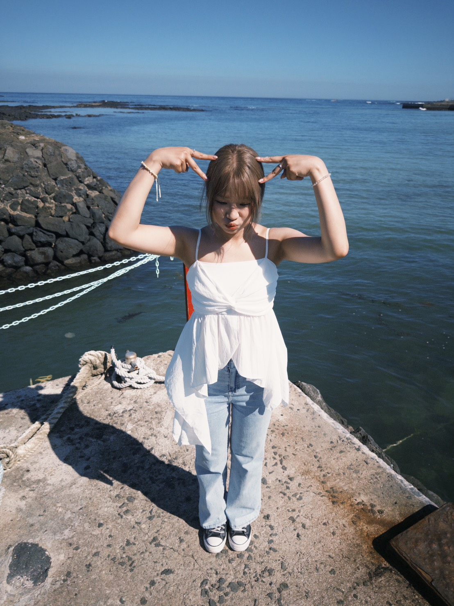

Introduction

ABOUT ME
Hi, I’m Judy, a sophomore in Foreign Languages and Lierature at National Tsing Hua University (NTHU). I’m from Xindian, New Taipei City, currently living on campus, and I’m also Amis from Taitung.
Growing up between different cultural backgrounds has shaped how I see language and identity. I used to avoid talking about my indigenous identity because I rarely returned to my tribal community, didn’t know much about it, and couldn’t speak Amis. However, since coming to university and meeting more people who share the same roots, I’ve gradually started to reconnect with that part of myself and feel more confident about who I am. This shift also made me think more deeply about language, not just as a subject, but as something tied to identity and experience. That’s probably why, in my major, I find myself more drawn to linguistics than literature. I’m interested in how language actually works in real-life situations, especially how meaning is shaped through context rather than just rules.Outside of academics, I love traveling and exploring new places. I’m always drawn to the ocean, and I never get tired of being amazed by crystal-clear water. That sense of curiosity and wonder is what led me to start free diving a few years ago. Even though I don’t get to practice as much now, it’s still something I truly enjoy and hope to return to more often.
"Still exploring language, identity, and everything in between."
IG: ccy.613
HOBBY
Free diving is one of my favorite hobbies, and I started learning it three years ago because I’ve always been drawn to the ocean. I love traveling and exploring new places, and whenever I get the chance, I find myself going to the beach. There’s something about crystal-clear water that always amazes me. Every time I see it, I can’t help but stop and just look at it for a while. I would often catch myself wondering what it would feel like to actually go down there instead of just standing above and looking at it. That curiosity is what led me to try free diving in the first place.
At the beginning, it was more difficult than I expected. Free diving is not just about going underwater. It requires a lot of control, especially over your breathing and your thoughts. You have to stay calm, even when your body starts to feel uncomfortable or when you feel a bit panicked. I still remember how nervous I felt during my first few dives. I wasn’t sure whether I could do it, and everything felt unfamiliar, but it was extremely exciting to finally go underwater on my own and see a completely different view. Over time, I slowly got used to that feeling and started to feel more comfortable and confident in the water.
Because free diving requires so much focus, I sometimes notice that I become really calm when I’m diving. It’s a kind of quiet, focused feeling that is hard to find in everyday life. When I’m underwater, I don’t think about anything else. I just focus on my breathing, my movements, and the environment around me. I really enjoy that sense of being fully present in the moment. It feels simple, but in a really good way.
I also realized that free diving taught me patience. There were times when I couldn’t go deeper or felt stuck, and it could be frustrating. But instead of forcing it, I had to learn to slow down, relax, and try again. I think that’s something I don’t usually practice in my daily life, so it became a meaningful part of this hobby.
However, since starting university, it has been harder to balance free diving with my academic work. With classes, assignments, and living on campus, I don’t get to practice as often as before. Sometimes I even have to give it up for a while to focus on school. Even so, it’s still something I truly enjoy. I think it’s one of those things that I won’t easily let go of, and I know I’ll go back to it whenever I have the chance.
MY PUPPY